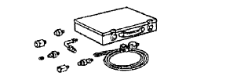
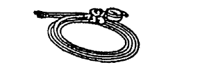

HỆ THỐNG TRỢ LỰC LÁI > KIỂM TRA TRÊN XE > Chuẩn bị

|  | 09640-10010 | Đồng hồ đo áp suất trợ lực lái Bộ |
|  | (09641-01010) | Cụm đồng hồ |
| (09641-01020) | Gá A | |
| (09641-01030) | Cút nối A |
| Hạng mục | Dung tích | Phân loại |
| Dầu trợ lực lái (Tổng cộng) | 1.0 lít (1.1 US qts, 0.9 Imp.qts) | ATF DEXRON II hay III |
 | 09025-00010 | Cờlê cân lực (30 kgf-cm) | |
 | 09042-00010 | Chìa vặn đầu hoa khế T30 | |
 | 09905-00012 | Dụng cụ tháo lắp phanh hãm số 1 |
| Đồng hồ đo xilanh | |
| Thước kẹp | |
| Đồng hồ so | |
| Thước lá | |
| Panme | |
| Cờlê cân lực |